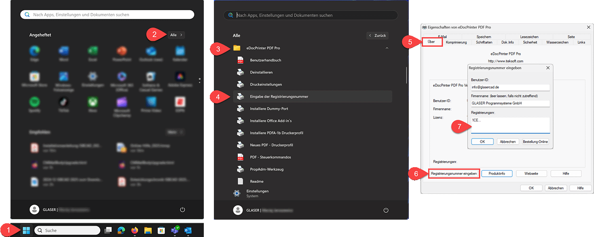

Registrieren Sie nach dem Lizenzerwerb und Erhalt der Registrierungsnummer das eDocPrinter-Programm wie folgt:
1.Öffnen Sie das Windows-Startmenü.
2.Wählen Sie Alle (Apps).
3.Navigieren Sie zur Programmgruppe eDocPrinter PDF Pro.
4.Öffnen Sie den Ordner und klicken Sie auf Eingabe der Registrierungsnummer.
Die Druckereinstellungen des eDocPrinter PDF Pro werden geöffnet.
5.Öffnen Sie die Registerkarte Über.
6.Klicken Sie auf Registrierungsnummer eingeben.
7.Geben Sie im Eingabefeld Registrierungsnr. die Registrierungsnummer ein, die Sie in unserer E-Mail erhalten haben. Bestätigen Sie mit OK.
Falls Sie die E-Mail mit der Registrierungsnummer nicht mehr finden können, dann kontaktieren Sie uns unter:
Tel.: +49 511 592931-0
E-Mail: support@glasercad.de
Wir schicken Ihnen die Registrierungsnummer gerne erneut zu.
Nach Bestätigung der Registrierungsnummer wird der eDocPrinter PDF Pro freigeschaltet und kann ohne Einschränkungen genutzt werden.
Sie können den Dialog Eigenschaften von eDocPrinter PDF Pro schließen.
 |
Siehe auch: